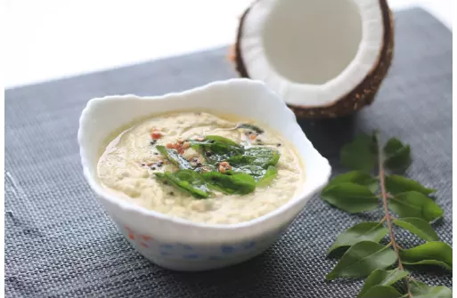

Ingredients
- 1/2 cup grated Dry Coconut
- 3 Garlic Cloves (optional), roughly chopped
- 3-4 Dry Kashmiri Red Chillies (or 1 Normal Dry Red Chilli), halved and deseeded
- 3 tablespoons Chana Dal (split Bengal Gram)
- 1 teaspoon Urad Dal (split Black Gram)
- 1/4 teaspoon or to taste Salt
- 1/2 teaspoon Oil
Directions
- Take chopped coconut in a small chutney jar of food processor or grinder.
- Grind it to make a medium coarse paste and transfer to a plate.
- Add green chillies, roasted chana dal and ginger in same chutney jar.
- Grind them to a smooth powder.
- Add crushed coconut, curd, lemon juice, salt and 1/2 cup water.
- Grind them to make a medium coarse paste. If required, add more water to get desired consistency of chutney and grind again. Transfer it to a bowl.
- Heat oil in a small tempering pan. Add mustard seeds. When seeds begin to crackle, add cumin seeds, dry red chilli and curry leaves and sauté for 10 seconds.
- Take away pan from flame and immediately pour tempering over the prepared coconut paste and mix well. Coconut chutney for idli and dosa is ready; enjoy it with your favorite type of dosa.